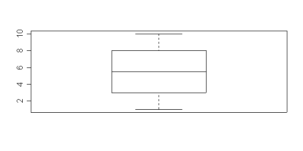

Eric Lecoute
avr. 02, 2004
HTML Sweaving relies on R2HTML package, which uses CSS styles. Thus, you can change the whole aspect of your output, simply by changing the CSS file. Simply call:
You can insert scalars in text by using expressions <Sexpr expr>. If the result is a vector, only the first element is returned: see the call <Sexpr round(rnorm(10),2)> transformed to: 0.55. Also any HTML tag can be used to format this output: see this colored actual year computed by date(): 2004.
As we use HTML() functions, some formatting is already applied on most R objects. This this regression result:
-2.84356544970632 -1.83325602423836 -0.772809629352725 2.07696588557758 3.50616693306879
|
--- Signif. codes: 0 `***' 0.001 `**' 0.01 `*' 0.05 `.' 0.1 ` ' 1
By default, the last manipulated object in a code chunk is evaluated and a call to HTML is done to catch it's HTML representation, which is inserted in the output file. You can override this behaviour by explicitely return a string containing HTML codes as output. This allows to have more controls on output, as you can do exactly what you want from R. To specify that output are already HTML, add the option results=html to your code chunk.
|
Finally, some more options are added to handle graphs, such as width, height, border, align and caption

Boxplot - x